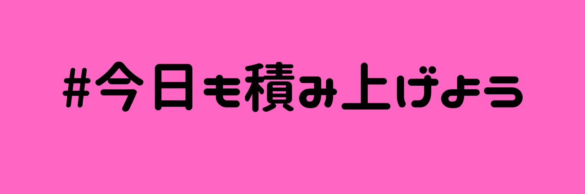

Hugoには画像を管理する方法が2種類あるようです。
contentフォルダ内で記事と画像をセットで管理する方法で管理してみます。
hugo new posts/20200627/test_post/index.md
上記のhugo newコマンドで作成されるcontent配下のディレクトリ構造です。
content
└ posts
└ 20200627
└ test_post
└ index.md
test_post内にあるindex.mdが記事になるので、画像パスを以下のように記述します。

この場合test_post内のimage.jpgを指します。
あとは、test_post内にimage.jpgを置くだけです。 この状態でビルドして、アップすれば記事内に画像を貼ることができました。
content
└ posts
└ 20200627
└ test_post.md
└ images.jpg
この記事にも画像を貼ってみました↓
